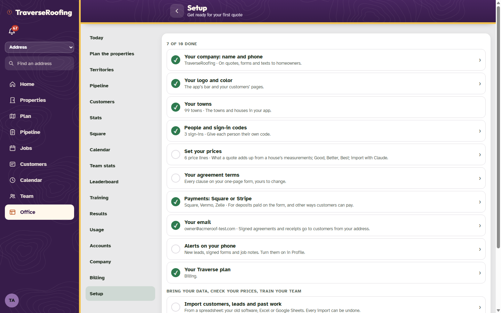
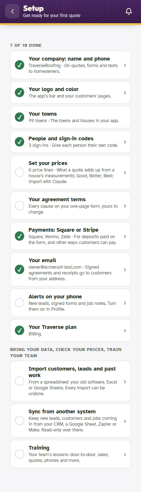
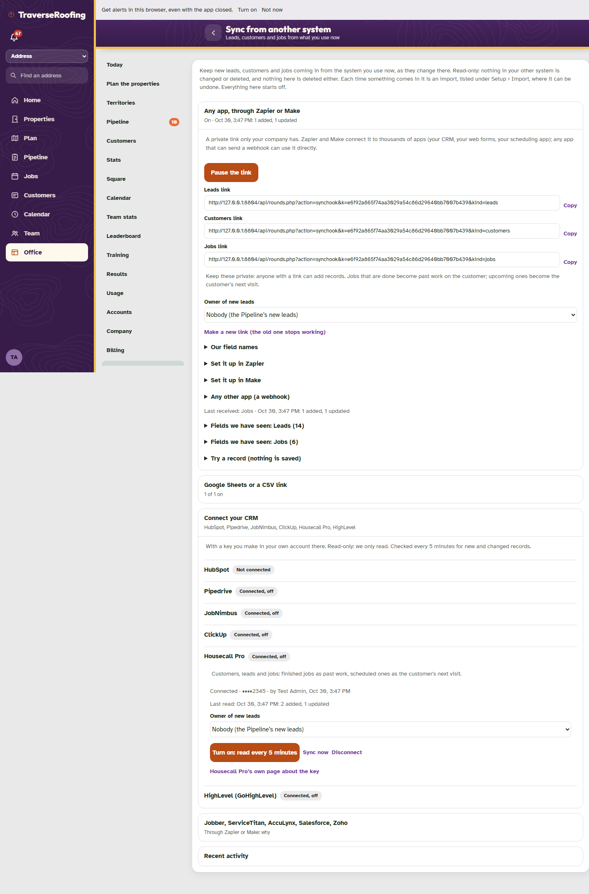
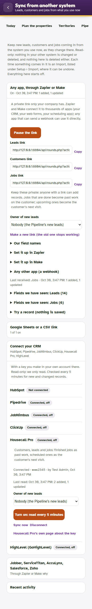
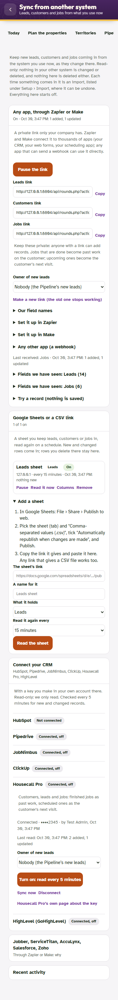
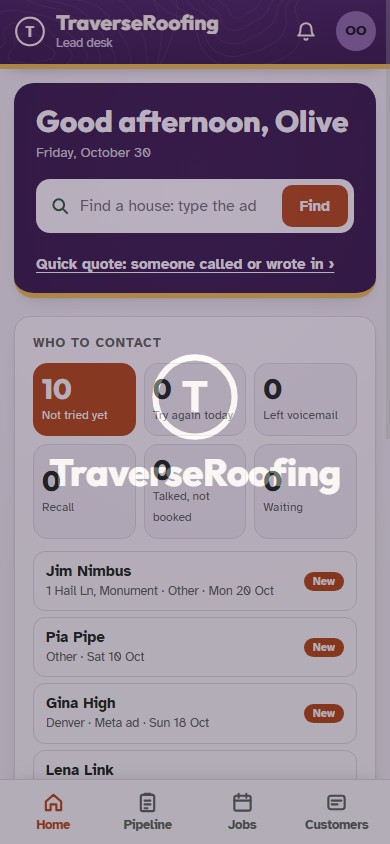
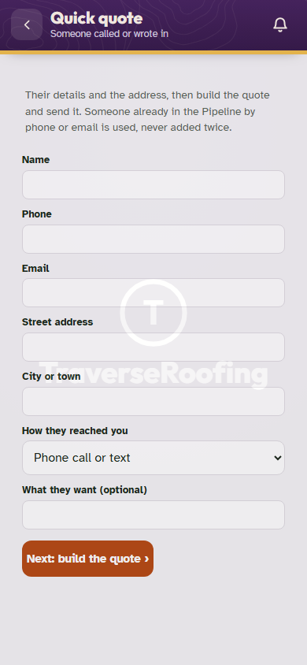
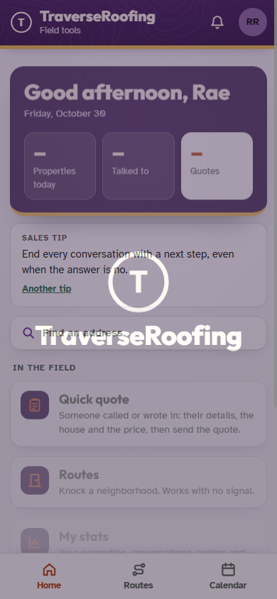

Sync from another system, and the Quick quote as a permission
Harness screenshots, 30 Oct 2026 (TraverseRoofing harness install, test data only). Made by crmsync-test.mjs after its API checks, so the connectors show as connected to the stand-in.
Setup › Sync from another system

Setup: "Sync from another system" under Import.

Setup on a phone.

Computer: the link for Zapier, Make or any webhook (three links to copy), field names, setup steps, fields seen, try a record; sheets; the six connectors; the others and why.

Phone, 390 px: no sideways scroll.

Google Sheets or a CSV link: a sheet on, and Add a sheet with the Publish to web steps.
The Quick quote (quote.phone)

The office (on by default): Quick quote under the Lead desk's house search.

The form: details, address, how they reached you; next is the quote builder on that lead.

A sales rep whose role was given it in Accounts: the Quick quote tile. Without it, none.